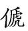

此石碣世称窆石，在会稽禹庙中，高虑傂尺[133]八尺九寸，上端有穿[134]，径八寸五分，篆书三行在穿右下。平氏《绍兴志》[135]云：康熙初张希良以意属读，得二十九字，寻其隅角，当为五行，行二十六字。王氏昶《金石萃编》[136]云：“惟‘日年王一并天文晦真’九字可辨”。此拓可见者第一行“甘□□□□□□王石”，第二行“□乾ク并□天文晦彳”，第三行“□□言真□□黄□□”，十一字又二半字。其所刻时或谓永建，或又以为永康，俱无其证。《太平寰宇记》引《舆地记》[137]云：“禹庙侧有石船，长一丈，云禹所乘也。孙皓刻其背以述功焉，后人以皓无功可记，乃覆船刻它字，其船中折”。阮氏元《金石志》因定为三国孙氏刻。[138]字体亦与天玺刻石极类，盖为得其真矣。所刻它字，今亦不见。第有宋元人题字数段，右方有赵与陞题名[139]，距九寸有员峤真逸题字[140]，左上方有龙朝夫诗[141]，颇漫患。王氏辨五十八字。[142]俞氏樾又审仞其诗，止阙四字，载《春在堂随笔》中。[143]今审拓本，复得数字，具录如下：“□□□□□九月□一日从事郎□□□□□□□□□□□□龙朝夫因被命□□□□瞻拜禹陵□此诗以纪盛□云 沐雨栉风无暇日 胼胝还见圣功劳 古柏参天□元气 梅梁赴海作波涛 至今遗迹衣冠在 长□空山魑魅号 欲觅□陵寻窆石 山僧为我剪蓬蒿”。上截旧刻灭尽，有清人题字十余段，旧志所称杨龟山题名[144]，亦不可见矣。
碣中折，篆文在下半。《绍兴志》云：“下截为元季兵毁”，殊未审谛。《舆地志》言长一丈，今出地者几九尺，则故未损阙矣。《嘉泰会稽志》引《孔灵符记》[145]云：“始皇崩，邑人刻木为像祀之，配食夏禹庙。”又云：“东海圣姑从海中乘石船张石帆至，二物见在庙中。”盖碣自秦以来有之，孙皓记功其上，皓好刻图，禅国山，天玺纪功诸刻皆然。岂以无有圭角，似出天然，故以为瑞石与？晋宋时不测所从来，乃以为石船，宋元又谓之窆石，至于今不改矣。
注 释
[132] 本篇据手稿编入，原无标题、标点。当写于1917年上半年。
会稽，旧县名，隋代分山阴县置，治所在今浙江绍兴。1912年与山阴合并为绍兴县。城东南有禹庙，为梁代所建，窆石在庙之东南。
[133] 虑

尺 又称建初尺，系东汉章帝建初六年（81）所造铜尺，一尺约等于二三点五八厘米。[134] 穿 指石碑、石碣上端的洞孔。
[135] 平氏 即平恕，清代山阴人，乾隆时官日讲起居注官、詹事府少詹。《绍兴志》，即《绍兴府志》，乾隆五十七年（1792）由平恕总修，共八十卷。该书卷七十五《金石志》“汉刻禹庙窆石题字”条：“国朝康熙初，浙江督学张希良曾搨之，以意属读，得二十九字，盖汉代展祭之文。寻其隅角，当为五行，行十六字。其下截为元季兵毁。依韵求之，则其下当阙六字也。”按张希良撰有《窆石汉隶考》，见引于清代杜春生《越中金石记》。
[136] 王昶（1724—1806） 字德甫，号兰泉，青浦（今属上海）人，清代金石学家。《金石萃编》，金石目录，共一六○卷。窆石残字释文见该书卷十一。
[137] 《太平寰宇记》 地理总志，宋代乐史撰，原二百卷，现存一九三卷。所引《舆地记》语，见该书卷九十六“江南东道八·越州·会稽”，鲁迅引文中的“它”，原作“之”。《舆地记》，疑即《舆地志》，南朝梁顾野王撰，原本三十卷，已佚。现有清人辑本一卷。
[138] 阮元（1764—1849） 字伯元，江苏仪征人，清代学者。官至体仁阁大学士。《金石志》，即《两浙金石志》，金石目录，共十九卷。该书卷一转述《太平寰宇记》所引《舆地记》语后说：“据此，为三国孙氏刻审矣，《嘉泰志》称直宝文阁王顺伯复斋定为汉刻，未之得也。”孙氏，指孙皓（242—283），三国吴最后一个皇帝。下文的天玺刻石，指孙皓于天玺年间（276）所立的“禅国山碑”（在江苏宜兴）和“天玺纪功碑”（原在江苏江宁，已亡失）。
[139] 赵与 宋代嘉兴（今属浙江）人，宝庆二年（1226）进士。他在窆石上的题名为隶书，一行十二字：“会稽令赵与陞来游男孟握侍”。
[140] 员峤真逸 即李倜，字士宏，号员峤真逸，元代河东太原（今属山西）人。官至集贤侍读学士。他在窆石上的题字为正书，二行十四字：“员峤贞逸来游皇庆元年八月八日”。
[141] 龙朝夫诗 此诗刻共九行，行十四字，正书。杜春生《越中金石记》：“此刻年代无考，然从事郎阶惟宋元有之，明改为从仕郎矣。今姑置元末。”
[142] 王氏 指王昶，他对龙朝夫诗的释文，亦见所著《金石萃编》卷十一。
[143] 俞樾（1821—1907） 字荫甫，晚号曲园老人，浙江德清人，清末学者、文学家。道光进士，曾任河南学政，不久罢归，在苏州、上海、杭州的书院讲学。著有《春在堂全书》。《春在堂随笔》，笔记集，十卷。俞樾对龙朝夫诗的释文见该书卷二。
[144] 杨龟山（1053—1135） 名时，字中立，号龟山先生，宋代南剑将乐（今属福建）人。官至龙图阁直学士。著有《龟山集》。《嘉泰会稽志》卷十一：“禹葬于会稽山，取此石为窆。……宣和中杨时有题名。”
[145] 《嘉泰会稽志》 地方志，宋代施宿撰，陆游序，南宋嘉泰元年（1201）成书，二十卷。所引《孔灵符记》语，前一条见该志卷六，后一条见卷十三。《孔灵符记》，即孔灵符《会稽记》，原书已佚，鲁迅有辑本一卷，收入《会稽郡故书杂集》。孔灵符（？—465），名晔，南朝宋山阴人。官至辅国将军，出为会稽太守。